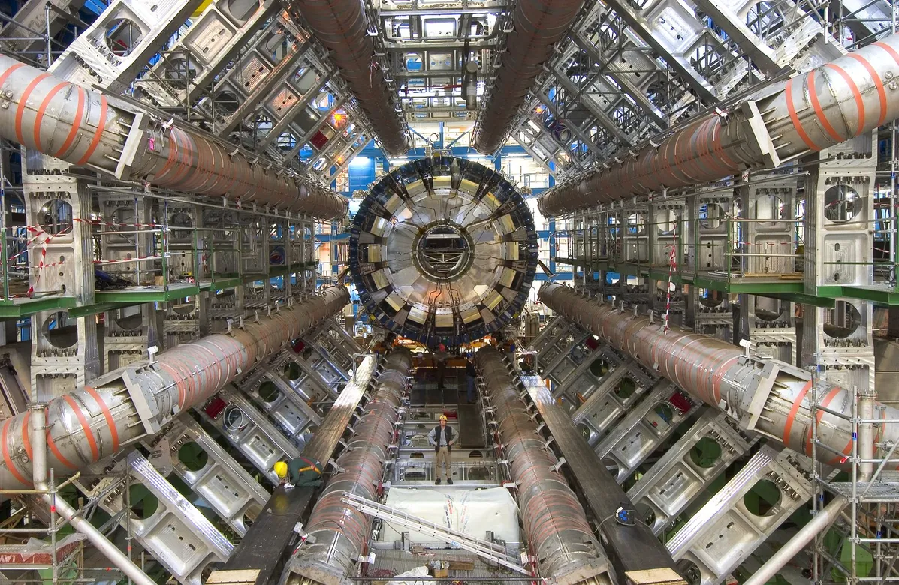
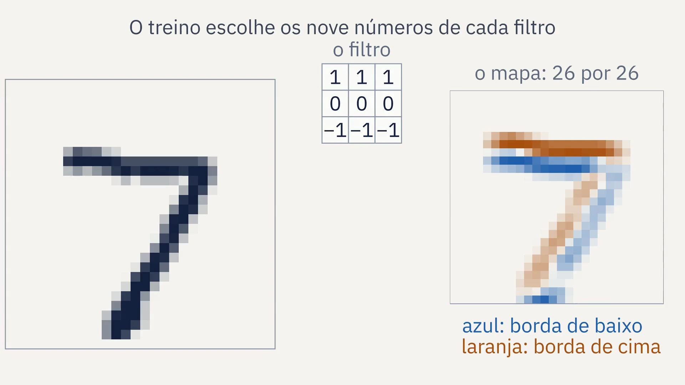
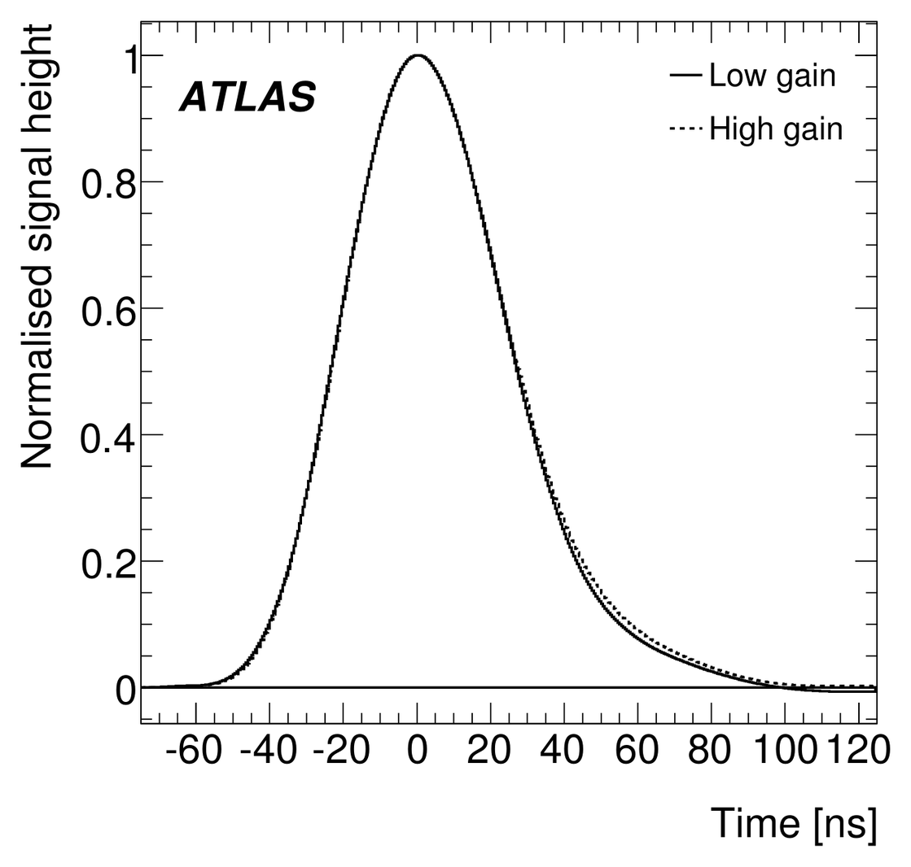
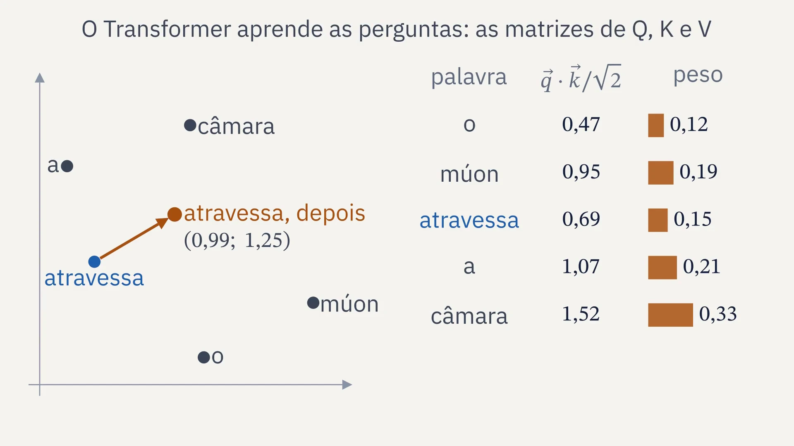

SIENA, NIPS-CERN, UFJF
Limiar
Redes neurais, do neurônio ao fractal
Aula 10: revisão do curso e apresentação
11/12/2026. C∴ Chrysthofer A. A. Afonso

A instalação do calorímetro do ATLAS, 04/11/2005. Foto de Maximilien Brice, CERN, CERN-EX-0511013, CC BY 4.0.
Limiar, aula 10: revisão e apresentação


1 · Revisão
O que ficou da aula 9, de memória
1
O que é cada pixel do mapa das duas taxas?
2
Por que a fronteira é um fractal, e não uma linha?
3
Como a contagem de caixas mede a dimensão?
4
O que a rede da aula 7 mostrou no plano?
Limiar, aula 10: revisão e apresentação
1 · Revisão
O fio do curso, da aula 1 à 10
1
O neurônio e o perceptron
um neurônio desenha uma reta, e nenhuma reta separa o XOR
25/09, presencial
2
Derivada e gradiente
o passo contra a derivada; a taxa grande demais faz o treino divergir
02/10, presencial
3
Matrizes e camadas
duas camadas separam o XOR, com pesos escolhidos à mão
13/11, on-line
4
O Jacobiano
a regra da cadeia com vetores, uma camada de cada vez
13/11, on-line
5
Retropropagação
a regra da cadeia, de trás para a frente, acha os pesos do XOR
13/11, on-line
6
O MNIST em NumPy
um MLP em 70 mil dígitos escritos à mão, com treino, validação e teste
27/11, on-line
7
PyTorch
a biblioteca faz a retropropagação; o erro final contra a taxa
27/11, on-line
8
Os dados do CERN
um MLP estima a massa dos dois múons, conferida pela fórmula
04/12, on-line
9
O fractal e o projeto
a fronteira entre a taxa que converge e a que diverge
04/12, on-line
10
A apresentação
a apresentação do projeto e a revisão do curso inteiro
11/12, on-line
Limiar, aula 10: revisão e apresentação
2 · O curso inteiro
O curso numa figura: o laço do treino

Limiar, aula 10: revisão e apresentação
2 · O curso inteiro
Do neurônio às camadas
Aula 1: o neurônio
- o E com o vetor dos pesos (1; 1) e b = −1,5
- a regra do perceptron acha os pesos
- nenhuma reta separa o XOR
Aula 3: as camadas
- o XOR à mão: o OU, o E e degrau(h₁ − h₂ − 0,5)
- sem ativação, duas camadas valem uma
- a ativação dobra o plano
Limiar, aula 10: revisão e apresentação
2 · O curso inteiro
Como a rede aprende
Aula 2: o passo
- a derivada aponta para onde a perda cresce
- na reta, acima de η = 0,513, diverge
Aula 4: o Jacobiano
- a regra da cadeia com vetores
- de trás para a frente: 3m² e não 2m³ + m²
Aula 5: a retropropagação
- o XOR em 200 passos, perda 0,0359
- conferido até 2,8 · 10⁻¹¹
Limiar, aula 10: revisão e apresentação
2 · O curso inteiro
Com dados de verdade
97,59%
de acerto no teste do MNIST, com a rede da aula 6 em NumPy
0
de diferença entre o NumPy da aula 6 e o PyTorch da aula 7
1,88%
de erro mediano da rede na massa dos múons do CMS, aula 8
Cada número medido uma vez, no teste, com a semente e a versão dos dados registradas.
Limiar, aula 10: revisão e apresentação
3 · A apresentação
Dizer o que entra, o que a rede aprende e o que significa o número que sai
Vale para o projeto, e para qualquer rede, daqui em diante.
Limiar, aula 10: revisão e apresentação
3 · A apresentação
Perguntas que a apresentação deve aguentar
1
Por que 72 eventos?
2
Por que float64?
3
A dimensão 1,62 é a do artigo, 1,66?
4
O que é cada pixel?
5
Por que a rede da aula 7 deu granulado?
6
Como alguém refaz a figura?
Limiar, aula 10: revisão e apresentação
4 · Depois do MLP
E se o 7 andar dois pixels para o lado?
Cada neurônio do MLP da aula 6 tem 784 pesos, um por pixel: um traço deslocado passa por outros pesos.
Limiar, aula 10: revisão e apresentação
4 · Depois do MLP
A convolução: nove pesos que deslizam

Limiar, aula 10: revisão e apresentação
4 · Depois do MLP
A camada convolucional
200.704
pesos na primeira camada do MLP da aula 6, 784 × 256
288
pesos em 32 filtros de 3 por 3, que olham a imagem inteira
As três ideias, no capítulo 6 de Nielsen
- campo receptivo local: cada neurônio olha um pedaço
- pesos compartilhados: o mesmo filtro em toda posição
- pooling: um quadradinho do mapa vira um número só
1980
O neocognitron de Fukushima: pesos compartilhados, sem treino por gradiente.
1989
LeCun e colegas, na Bell Labs: a retropropagação lê códigos postais.
1998
A LeNet-5 da aula 6: 0,95% de erro no MNIST; lia cheques.
Limiar, aula 10: revisão e apresentação
4 · Depois do MLP
No TileCal: sete amostras, uma soma ponderada

O pulso de referência do TileCal. Figura 2 de ATLAS, 2018, arXiv:1806.02129, CC BY 4.0.
Sᵢ, a amostra i do pulso; aᵢ, o peso dela
- uma amostra a cada 25 ns, sete em volta do pico, a quarta no pico
- a altura do pulso é proporcional à energia
- os pesos saem da forma do pulso e do ruído: calculados, não aprendidos
A conta do neurônio da aula 1, sem a ativação: sete entradas, sete pesos, uma soma.
Limiar, aula 10: revisão e apresentação
4 · Depois do MLP
O problema do SIENA
Cardinot, Peralva, Libotte e Luciano, 2026
Redes convolucionais de uma dimensão deslizam sobre as amostras do pulso, contra o filtro ótimo, com pulsos simulados de um canal e de 10% a 100% de ocupação.
≈ 79%
de melhora média no RMS da amplitude, somando as ocupações
O SIENA
A rede acerta nas condições do treino e erra quando elas mudam: outra célula, outro empilhamento.
Levar a rede a outras condições e a outros calorímetros é o projeto: a generalização da aula 1.
Limiar, aula 10: revisão e apresentação
4 · Depois do MLP
A atenção: cada palavra olha as outras

Limiar, aula 10: revisão e apresentação
4 · Depois do MLP
O Transformer
A, a atenção; Kᵀ, K transposta; d, as coordenadas de cada vetor
“Attention Is All You Need”, 2017: oito autores, então no Google. A peça central dos grandes modelos de linguagem.
1
o produto escalar
cada pergunta contra cada chave
3
o produto de matrizes
QKᵀ, todas as comparações de uma vez
6
a softmax
as notas viram pesos que somam 1
Limiar, aula 10: revisão e apresentação
5 · Fechamento
Limiar, os três sentidos
1
o neurônio
dispara quando a soma passa do limiar: o degrau da aula 1
2
o treino
a taxa a partir da qual o treino diverge: um ponto, uma faixa, um fractal
3
a pesquisa
para quem entrou na graduação, o curso é a porta: o projeto e a apresentação
Limiar, aula 10: revisão e apresentação
5 · Fechamento
Para continuar estudando
As redes convolucionais
Nielsen, “Neural Networks and Deep Learning”, capítulo 6
O Transformer
3Blue1Brown, redes neurais, capítulos 5 e 6: o Transformer e a atenção
O calorímetro
Cardinot e colegas, 2026; ATLAS, 2018, o TileCal no Run 1
O projeto
o zoom mais fundo e a dimensão medida com cuidado
Limiar, aula 10: revisão e apresentação
5 · Fechamento
A entrega final e o que fica
Entrega, em 11/12
- o repositório de cada um, reproduzível
- código, semente, versão dos dados e o .json de cada figura
Depois do curso
- o SIENA: a rede do TileCal em outras condições
- saber o que a rede aprende, e não só quanto acerta
O material fica
- os decks das dez aulas, com as notas
- os roteiros, as folhas e o código
Limiar, aula 10: revisão e apresentação